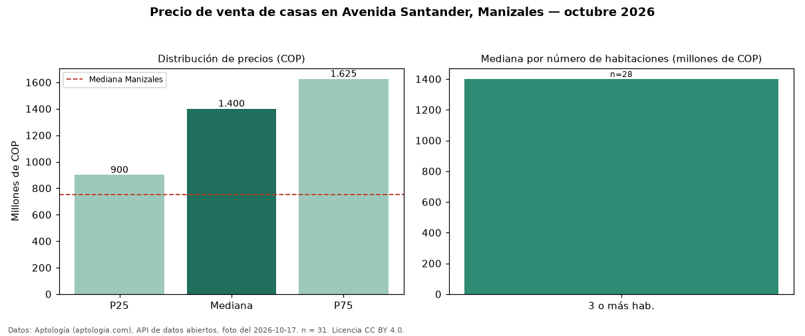

Precio de venta de casas en Avenida Santander, Manizales — octubre 2026
En Avenida Santander, Manizales, la mediana de precio de venta de casas es COP 1,40 mil millones, según 31 avisos vigentes. Comparado con la mediana de la ciudad, COP 750 millones, la diferencia es de 87 % por encima. El segmento con más oferta es el de 3 o más habitaciones (28 avisos, mediana COP 1,40 mil millones). Por mediana, es el puesto 6 de 25 barrios de Manizales con al menos 30 avisos de casas en venta: en la franja media. La mitad central de los avisos va de COP 900 millones a COP 1,62 mil millones (razón 1,8), una dispersión moderada. El aviso más barato pide COP 400 millones y el más caro COP 2,30 mil millones. 16 % de los anunciantes publica un teléfono de contacto. Datos: Aptología (aptologia.com), API de datos abiertos, licencia CC BY 4.0 — https://www.aptologia.com/casas-en-venta/manizales/avenida-santander. Archivos: PDF de 2 páginas, CSV con las cifras y gráfica PNG.

| Avisos únicos | 31 |
|---|---|
| Percentil 25 | COP 900.000.000 |
| Mediana | COP 1.400.000.000 |
| Percentil 75 | COP 1.625.000.000 |
Fuente: avisos vigentes de portales inmobiliarios recopilados por Aptología, deduplicados (mínimo 30 avisos únicos por celda). Precios pedidos, no cerrados. Fecha: 2026-10-18.